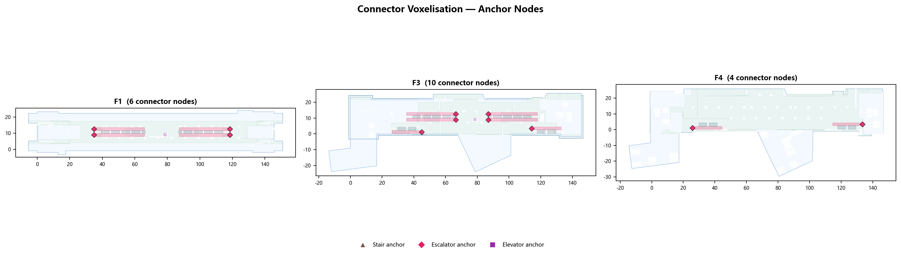
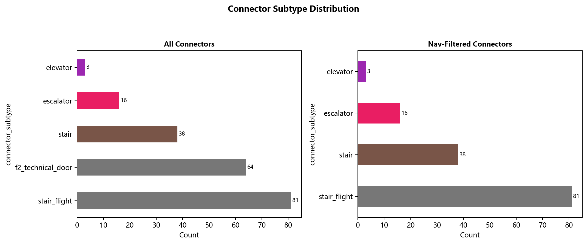

🗺️ Navigation Graph Construction
From raw IFC floor polygons to a 2.5D multi-level NetworkX graph with realistic traversal costs — fully automated without manual walkability labelling.
01 Station Topology
The station is modelled as four vertically stacked levels with defined public accessibility roles.
Street-level connections, bus stops, taxi rank, entrances from external transport.
Ticketing barriers, fare gates, customer service, retail units, station exits.
Non-public M&E floor. Used only as connector transition geometry (no walkable nodes sampled).
Train platforms, Platform Screen Doors (PSD), waiting zones, emergency exits.
02 BIM Geometry Extraction
Three IFC files are parsed with ifcopenshell; spatial elements are converted to Shapely geometry objects.
IFC Files → Geometric Artefacts
| IFC File | Floor | Key Elements Extracted |
|---|---|---|
站台层.ifc |
F1 | Floor slab polygon, PSD doors, platform edges, obstacle walls |
站厅层.ifc |
F3 | Concourse polygon, fare gates, retail barriers, stair wells |
设备层.ifc |
F2 | Connector shaft geometry (reference only — no walkable nodes) |
Extraction Pipeline
Load all IfcSlab components; compute Shapely convex_hull / unary_union of their projected footprints to obtain the walkable boundary polygon.
Walls, columns, and room dividers are projected to 2D axis-aligned bounding boxes (AABB). Merged with the hand-calibrated obstacles_recalibrated.csv overlay.
Doors on the platform face are classified as PSDs. Default state: closed. They are opened/closed in batch during ABM train-arrival events.
Each row specifies {type, level_from, level_to, x_from, y_from, x_to, y_to}.
These exact coordinates are used to create cross-level graph edges — no spatial inference needed.


03 Node Sampling (0.5 m Grid)
A uniform grid is cast over each walkable polygon, then cleaned against obstacles and forbidden zones.


04 Vertical Connectors
Three connector types create cross-level edges with distinct travel-time profiles.


05 Graph Statistics
Summary properties of the final 2.5D NetworkX directed graph.
| Property | Value | Notes |
|---|---|---|
| Total nodes | 18,648 | Across F1, F3, F4 (F2 excluded) |
| Total edges | 68,148 | In-floor + cross-level |
| In-floor edges | ~67,600 | 0.5 m grid adjacency (8-connected) |
| Cross-level edges | ~548 | Staircase + escalator + lift endpoints |
| Avg node degree | 3.66 | Reflects corridor geometry |
| Max node degree | 8 | Open areas, full 8-connectivity |
| Graph diameter | ~840 hops | Platform far end → transport exit |
| Dijkstra query time | ~48 ms | Full-graph, single-source, laptop CPU |


06 Interactive Visualisations
Explore the graph and station geometry interactively below.